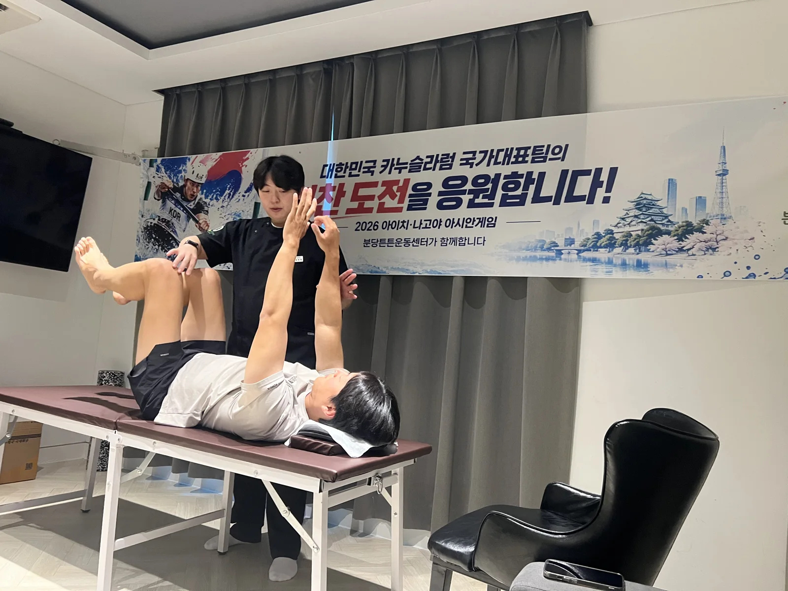
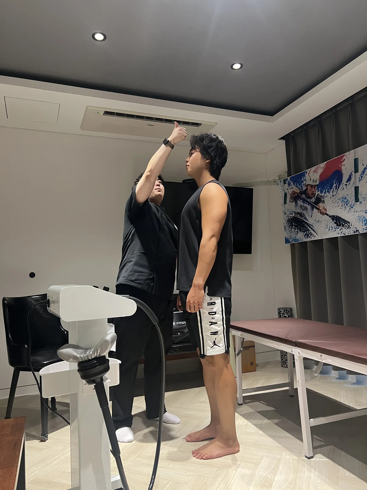
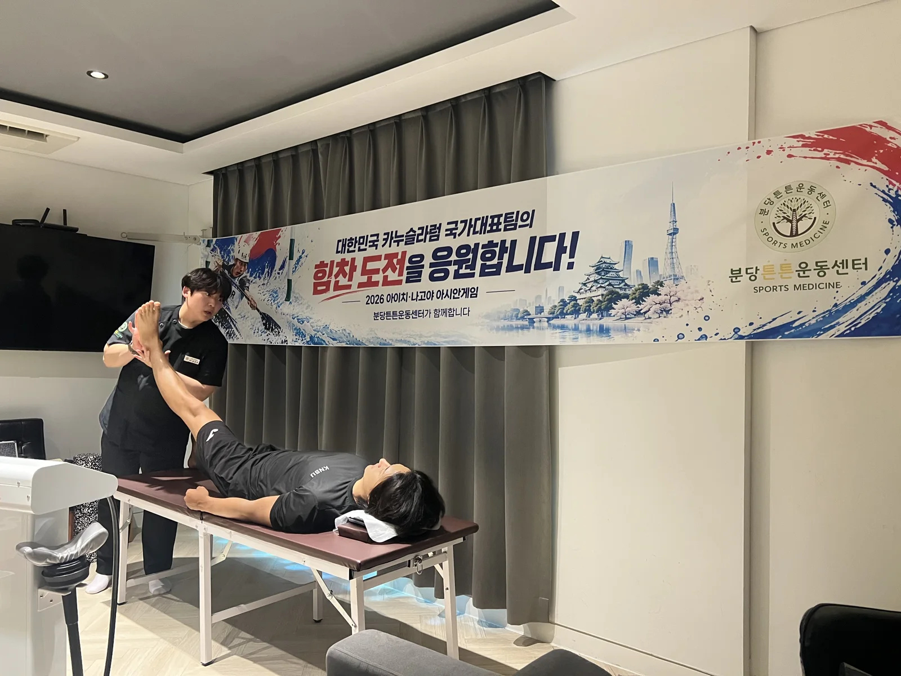
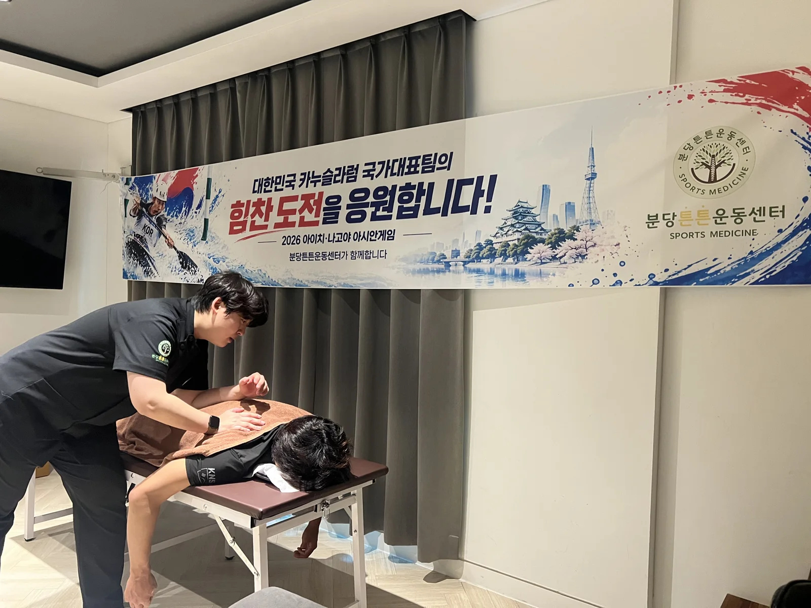
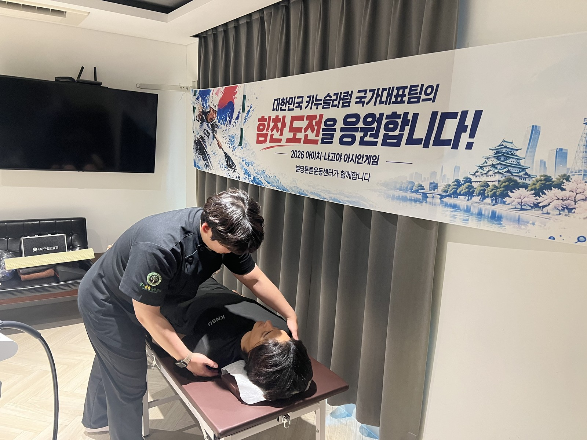
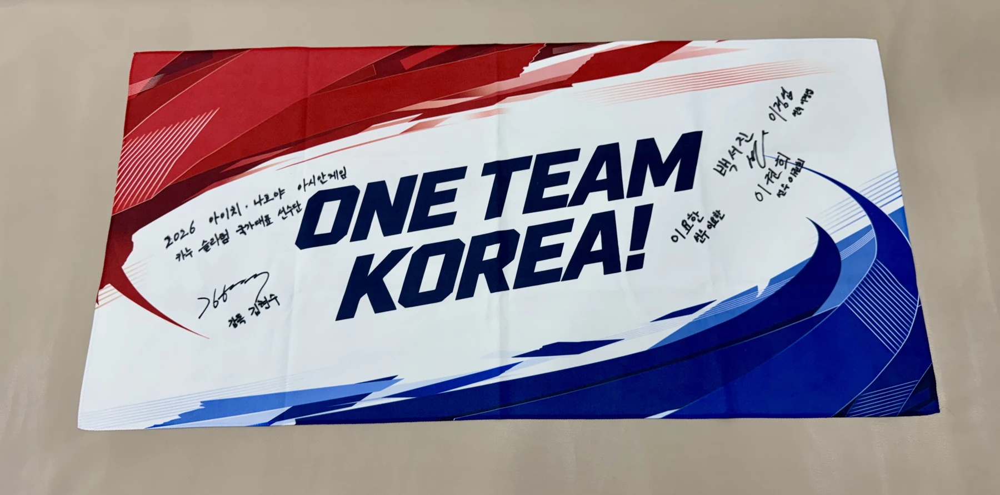

2026 아이치·나고야 아시안게임
카누 슬라럼 국가대표 선수들의
컨디셔닝을 함께했습니다
선수들과 함께한 현장 경험,
한 사람의 움직임을 세심하게 살피는 마음으로 이어갑니다.

함께한 활동
국가대표 선수 컨디셔닝
분당튼튼운동센터는 2026 아이치·나고야 아시안게임에 출전한 대한민국 카누 슬라럼 국가대표 선수들의 컨디셔닝을 진행했습니다. 선수들과 함께한 순간을 사진으로 소개합니다.
- 대회
- 2026 아이치·나고야 아시안게임
- 대상
- 대한민국 카누 슬라럼 국가대표 선수
- 활동
- 선수 컨디셔닝
현장 이야기
선수들과 함께한 컨디셔닝 현장
선수 한 사람 한 사람과 마주하며 컨디셔닝을 진행했습니다. 현장에서 함께한 경험을 통해 개인의 몸 상태와 목적을 세심하게 살피는 일의 중요성을 다시 되새겼습니다.






현장 경험에서 일상의 움직임으로
개개인의 몸 상태와 목적에 맞춰
운동의 목표와 필요한 움직임은 사람마다 다릅니다. 분당튼튼운동센터는 선수들과 함께한 현장 경험을 바탕으로, 일상에서도 개인의 신체 상태와 운동 목적을 세심하게 살피겠습니다.
맞춤 운동 프로그램 보기 센터 소식 목록으로